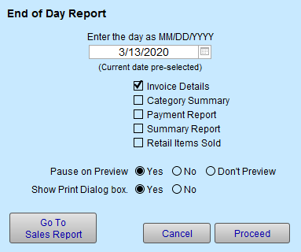
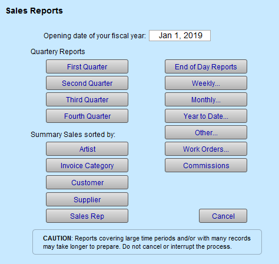

Sales Reports
Sales Reports by Day, Week, Month, Year, and Quarterly
Monthly reports are available showing each invoice that was created for that time period.
How to Print an End of Day Report
-
At the end of the day you will want to print your reports for sales.
-
There are a selection of End of Day Reports which will provide you with valuable information about your business.
-
The reports can be viewed or printed. You can also go back to previous days to print reports in case you miss a day.
-
On the Main Menu, in the Invoices section, click the Sales Reports button.
-
The "Sales Reports window" appears.

-
Click the End of Day Reports button.
-
The End of Day Report window opens. Today's date is automatically entered.

-
Mark the boxes for which corresponding reports you wish printed or view.
-
Click Proceed.
If you do not want to print the reports, then hold down the Control key to as you click Proceed to Preview.
Each report appears in order, as selected. You can choose to print each one separately. As you view each report, you have the choice to print, cancel or save as a PDF file in the Status bar.
How to Print a Monthly or Weekly Sales Report
-
Monthly and Weekly reports are available showing each invoice that was created for that time period.
-
All totals appear at the top of the first page.
-
Four reports are created: Invoice Details, Tax Sales Summary, Sales by Category, and Sales of Retail Items.
-
The Sales by Category Report and Sales of Retail Items automatically follow.
-
On the Main Menu, in the Invoices section, click the Sales Reports button.

The Sales Reports window appears. -
Click Monthly... or Weekly...
The default is set to current week or month but can be changed. -
You can select Pause on Preview if you want to view the document before printing.
To automatically print each report, set Show Print Dialog box to No. -
Click Proceed.
If you do not want to print the reports, then hold down the Control key to as you click Proceed to Preview. -
A dialog box appears telling you what your Sales Clip is for the month (see below for more info).
-
Click Continue to print or return to Main Menu.
-
A series of reports are presented in this order:
1. Invoice Details for month
2. Tax Sales Summary for month (there will be two reports if you use both tax fields)
3. Tax Sales by Category for month (there will be two reports if you use both tax fields)
4. Retail Items Sold for month
After the last report, FrameReady returns to the Main Menu.
What is Sales Clip?
-
A Sales Clip is a projected sales number for the month.
How the Monthly Sales Clip is calculated in FrameReady
-
For the month selected, FrameReady calculates the current sales (with taxes) and divides it by the current date (number) of the month to give an Average Per Day Total.
-
FrameReady then multiplies the Average Per Day Total by the number of days available in the selected month. This new amount is the Sales Clip; a projected sales number for the month.
-
Total Sales / Day of Month = Average per Day Total
-
Average Per Day Total x Number of Days in selected Month = Sales Clip
-
The final number is rounded up to two decimals.
Note: The Sales Clip will not match your actual sales for past months; remember that it is a calculation based on the current numeric day of the month, e.g. 24 for October 24th.
How to Print a Quarterly Sales Report
-
This Sales Report by Quarter provides you with four quarterly reports throughout the year.
-
In order to accurately use the Quarterly reports you will need to set your opening fiscal date in Main Menu > Set Up Data. The first column is retail price and the second is wholesale cost. This report is great for matching a previous year’s quarterly sales for comparison.
-
On the Main Menu, in the Invoices section, click the Sales Reports button.

The Sales Reports window appears. -
Select the First Quarter button (or the quarter for which you wish to print a report.)
A print preview appears. -
Click Continue.
© 2023 Adatasol, Inc.